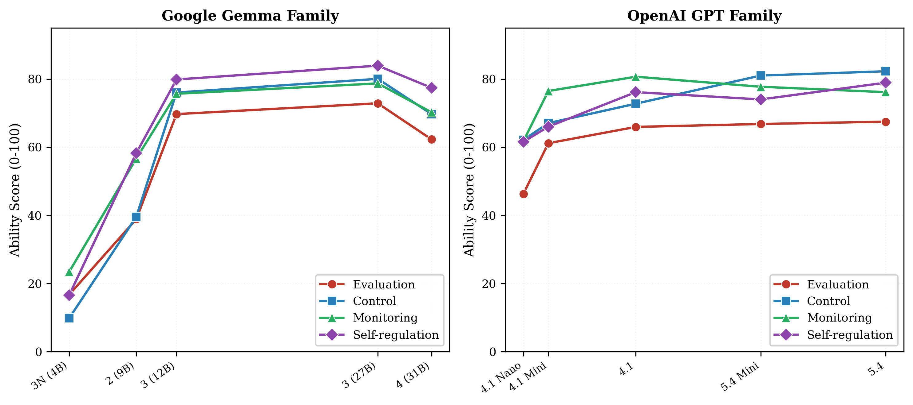
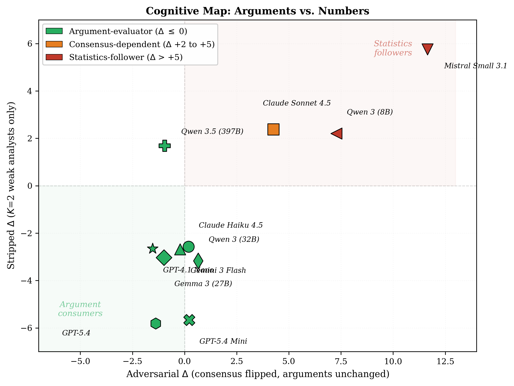
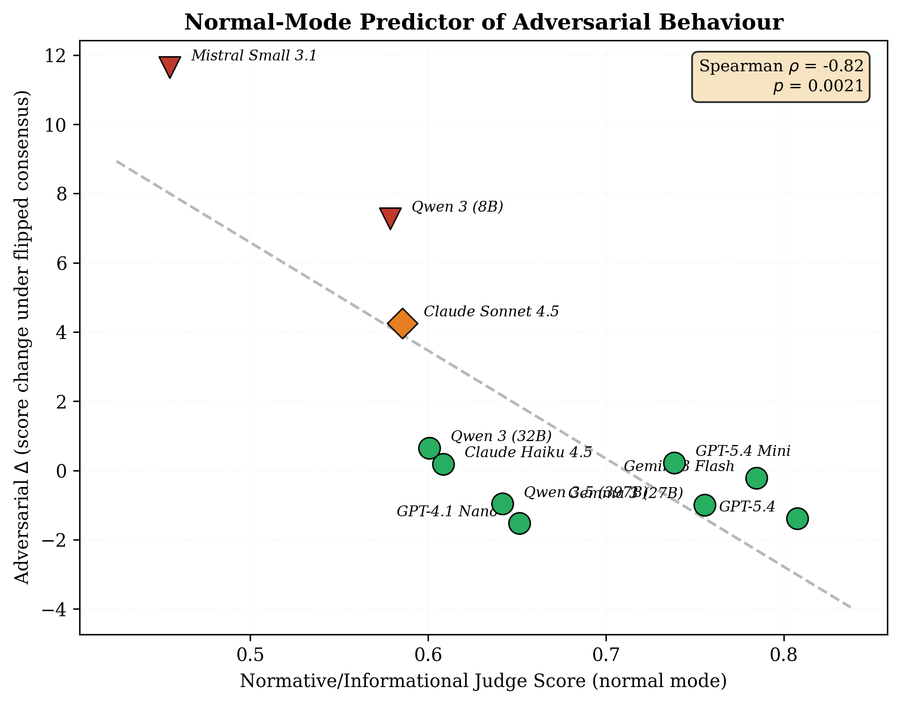
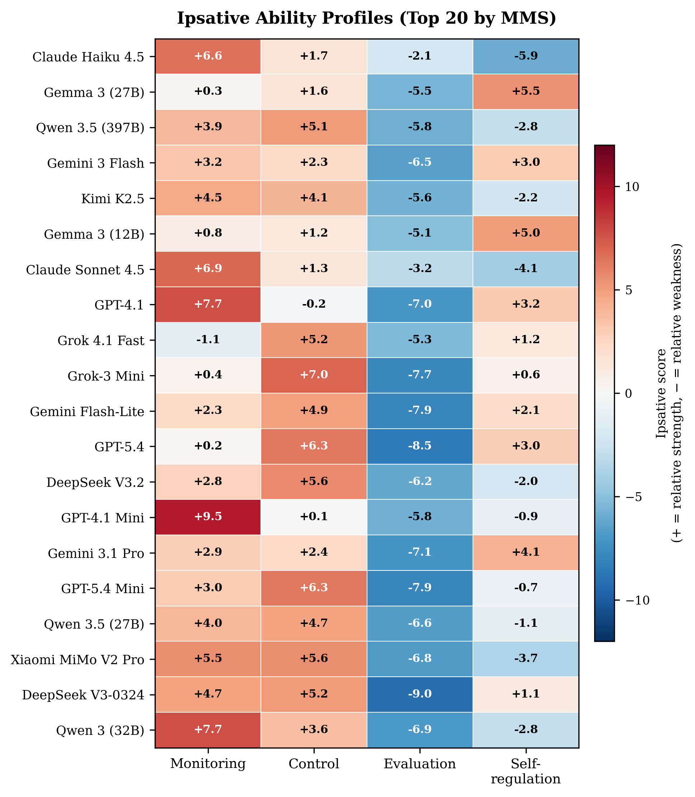

Key findings from 35 models across 12 families

Figure 1. Model size vs MMS across Gemma and GPT families. Scale shows diminishing and non-monotonic returns.
The Gemma family shows non-monotonic scaling: 4B (30) → 9B (50) → 12B (60) → 27B (61) → Gen4-31B (57). After 12B, additional parameters yield negligible metacognitive gains and the largest model actually regresses. The GPT family follows a similar pattern — raw scale buys evaluation ability but not control. These diminishing returns suggest that metacognition, unlike task accuracy, is not reliably improved by scaling alone.

Figure 2. Two-dimensional cognitive map from progressive adversarial testing.
Progressive adversarial testing reveals two distinct behavioural profiles invisible to standard benchmarks: argument-evaluators that engage with the content of analyst reasoning, and statistics-followers that defer primarily to majority counts. These profiles cluster cleanly in two-dimensional space, with models from the same family often occupying different regions — indicating that the distinction reflects training choices rather than architecture.

Figure 3. Normal-mode Normative/Informational dimension predicts adversarial behaviour (ρ = −0.82, p = 0.002).
A single judge dimension from the Kaggle-deployed normal-mode scoring — Normative vs Informational influence — predicts how models behave under adversarial pressure in progressive mode (ρ = −0.82, p = 0.002). Models that score high on normative (headcount-based) reasoning in normal mode capitulate most under adversarial consensus. This cross-validation confirms that the lightweight 3-call benchmark captures real metacognitive differences that manifest under stress.

Figure 4. Ipsative ability profiles for top 20 models.
After removing the PC1 general factor through ipsative scoring, a universal pattern emerges: Evaluation is every model's weakest relative ability across all 35 models tested. Three distinct cognitive types appear in the remaining variance:
Strong at tracking evidence and attributing analyst reasoning, weaker at acting on it.
Strong at resisting pressure and maintaining positions, weaker at recognising when change is warranted.
Strong at acknowledging errors and blind spots, weaker at systematic evaluation.
Why did users prefer the older model? Ipsative profiling reveals a hidden metacognitive regression.
The Lesson: Users are sensitive to metacognitive quality. Articulation (T3) can mask a drop in Monitoring, but it cannot replace it. Ipsative profiling captures this shift where aggregate benchmarks failed.
Ipsative profiles act as behavioural signatures that distinguish model families — and may reveal training provenance.
| Family | Dominant Ability | Mon | Ctrl | Eval | SReg | Signature |
|---|---|---|---|---|---|---|
| Claude (Haiku, Sonnet) | Mon-dominant | +6.6 | +1.4 | -2.8 | -5.2 | Unique |
| GPT-4.1 | Mon-dominant | +6.8 | -1.1 | -7.9 | +2.3 | Unique |
| GPT-5.4 family | Ctrl-dominant | -0.1 | +6.1 | -8.7 | +2.7 | Unique |
| Gemma (all models) | SReg-dominant | -0.2 | +1.2 | -6.0 | +5.0 | Unique |
| Qwen 3 (32B, 8B) | Mon-dominant | +7.1 | +3.9 | -8.8 | -2.3 | Matches GPT-4.1 |
| Qwen 3.5 (397B, 27B) | Ctrl-dominant | +3.8 | +4.8 | -6.4 | -2.2 | Matches GPT-5.4 |
| DeepSeek (V3.2, V3-0324) | Ctrl-dominant | +3.5 | +5.2 | -7.9 | -0.7 | Matches GPT-5.4 |
If a model is distilled from a specific teacher, it should inherit the teacher's metacognitive fingerprint. Qwen 3 matches GPT-4.1's monitoring-dominant profile; Qwen 3.5 shifted to match GPT-5.4's control-dominant profile — mirroring the exact generational shift. DeepSeek consistently matches GPT-5.4. Gemma, trained independently, has a unique self-regulation-dominant signature that no other family shares.
Profile similarity is not evidence of distillation — convergent training objectives could produce similar signatures. However, the observation that some families' profiles track another family's generational shifts (Qwen 3→3.5 mirroring GPT-4.1→5.4) while others remain unique (Gemma) suggests metacognitive fingerprinting may complement existing provenance analysis.
The Medley framework establishes that ensemble quality depends on diversity and complementarity. Ipsative profiles operationalise this for metacognition.
Claude Haiku, GPT-4.1
Tracks uncertainty, knows when it might be wrong. Catches errors that other models miss.
GPT-5.4, DeepSeek V3.2
Adjusts strategy under pressure, resists unjustified capitulation. Holds ground when right.
Gemma 3 27B, Gemma 4 31B
Acknowledges errors and blind spots. Identifies what it originally missed.
An ensemble combining one model from each profile cluster — e.g., Claude Haiku (monitoring) + GPT-5.4 (control) + Gemma 3 27B (self-regulation) — covers all four metacognitive sub-abilities. Three control-dominant models, however individually capable, would share the same monitoring blind spot.
Selection criterion: maximise metacognitive diversity by selecting models from different ipsative profile clusters, rather than selecting on aggregate score alone. This directly implements the Medley principle that diversity outweighs individual excellence.
Cross-domain correlations range from ρ = 0.72 to ρ = 0.92, indicating that metacognitive ability transfers across reasoning types. Models that reason well about medical diagnoses also reason well about code review and statistical problems.
Removing code review from the domain set changes the overall ranking correlation by only ρ = 0.995. It measures the same metacognitive construct as other domains with near-perfect overlap.
Removing statistical reasoning drops the ranking correlation to ρ = 0.977 — the largest single-domain contribution. Formal reasoning provides unique signal about metacognitive capacity not captured elsewhere.